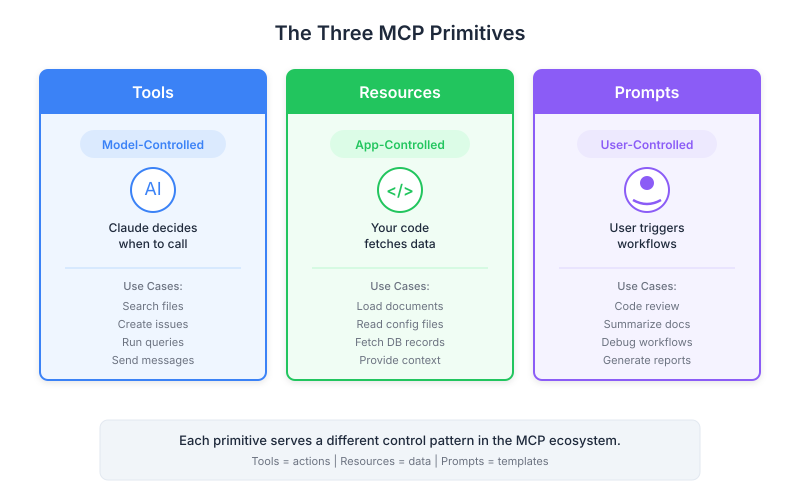

| Item | Detail |
|---|---|
| Exam Domain | D2 — Tool Design & MCP Integration (18%) |
| Task Statements | 2.3 (MCP server primitives), 2.4-2.6 (resource/tool/prompt design), 1.1 (agentic architecture) |
| Source | introduction-to-model-context-protocol / 04-assessment / Lesson 15 |
MCP has three building blocks for AI products — Tools (the AI decides), Resources (the app decides), Prompts (the user decides) — and knowing which to use is the single most important architecture decision a PM influences.

Think of an MCP-powered product as a smart office:
| Building Block | Office Analogy | Who Decides | Product Example |
|---|---|---|---|
| Tools | The specialist consultant you hired — they decide what analysis to run and when | Claude (AI) | Claude runs a calculation behind the scenes |
| Resources | The research assistant who pre-gathers briefing materials for meetings | Your app | Google Drive document injected into chat context |
| Prompts | The procedure manual employees follow — they choose when to use it | The user | User clicks "Summarize" workflow button |
Every AI feature you spec falls into one of three categories based on who should control it:
When to use: The AI needs capabilities to accomplish tasks autonomously.
| Product Scenario | Why Tools |
|---|---|
| AI calculates shipping costs during chat | AI decides when calculation is needed |
| AI queries inventory database | AI decides to check stock based on conversation |
| AI sends a notification email | AI decides the right moment to send |
PM consideration: Tools are invisible to users. The user does not click a button; the AI decides on its own. This means you need to trust the AI's judgment — or add guardrails (hooks) for high-stakes decisions.
When to use: Your application needs data for display or to pre-load context.
| Product Scenario | Why Resources |
|---|---|
| Autocomplete dropdown shows available docs | App fetches list for UI |
User types @report.pdf to reference a file |
App injects content into prompt |
| Sidebar shows related documents | App decides what context is relevant |
PM consideration: Resources make the experience feel instant. Data is pre-loaded before the AI starts thinking. This is the @mention pattern users know from Slack and Notion.
When to use: You want predefined, repeatable workflows that users trigger explicitly.
| Product Scenario | Why Prompts |
|---|---|
/format slash command |
User decides to reformat |
| "Generate Weekly Report" button | User triggers on demand |
| "Translate to Spanish" menu option | User initiates the workflow |
PM consideration: Prompts package expertise. Users get expert-level results without writing their own instructions. The slash command pattern is familiar and discoverable.
When writing a PRD for an AI feature, use this flowchart:
Question 1: "Who should decide when this happens?"
- The AI decides autonomously → Tool
- The app pre-loads data → Resource
- The user triggers explicitly → Prompt
Question 2: "Does this involve reading data or performing an action?"
- Reading data for display or context → Resource
- Performing an action with potential side effects → Tool
- Following a predefined workflow → Prompt
Question 3: "What happens if this goes wrong?"
- Serious consequences (financial, compliance) → Tool + guardrails (hooks)
- Minor UX issue → Any primitive, choose by control model
- Workflow inconsistency → Prompt (for repeatability)
These examples from Claude's official interface show all three primitives:
| Feature | Primitive | Control Model |
|---|---|---|
| Code execution behind the scenes | Tool | Claude decides when to run code |
| "Add from Google Drive" | Resource | App fetches and injects document |
| Workflow buttons below chat | Prompt | User clicks to start a workflow |
| Mistake | Consequence | Correct Approach |
|---|---|---|
| Spec'ing a tool for read-only data display | Slower UX (tool call overhead) | Use a resource — instant context injection |
| Spec'ing a tool for user-triggered workflows | Inconsistent results (AI might not follow exactly) | Use a prompt — tested template, consistent output |
| Spec'ing a resource for actions with side effects | Violates the read-only contract | Use a tool — only tools should have side effects |
| Spec'ing a prompt for autonomous AI behavior | User has to manually trigger every time | Use a tool — let the AI decide |
Imagine a document management AI assistant:
@mention autocomplete — when the user types @, the app fetches available documents from the MCP server/format command — the user selects a document and triggers the formatting workflowedit_document tool to rewrite the content in markdownAll three primitives are needed. Resources handle data, prompts handle workflows, tools handle actions.
PM takeaway: When writing acceptance criteria, specify which primitive each feature uses. This prevents engineering misunderstandings and ensures the right control model.
| Dimension | Tools | Resources | Prompts |
|---|---|---|---|
| Controller | AI (model) | App code | User |
| Trigger | AI reasoning | App logic | / command or button |
| Side effects? | Yes | No (read-only) | No (just messages) |
| UX pattern | Invisible | @mention |
Slash commands |
| Product analogy | Consultant | Research assistant | Procedure manual |
| Exam keywords | "autonomously," "Claude decides" | "pre-loaded," "UI data" | "workflow," "slash command" |
Key Insight
The three-way control model is the single most important concept for both product design and the CCA exam. Every "which primitive?" question resolves to: "Who should control this interaction?" Model = Tool, App = Resource, User = Prompt. Master this framework and you can answer any D2 scenario question.
| Front | Back |
|---|---|
| What are the three MCP server primitives and their controllers? | Tools (model-controlled by Claude), Resources (app-controlled by your code), Prompts (user-controlled by end users) |
| What is the single question that resolves most "which primitive?" decisions? | "Who should control this interaction?" — Model = Tool, App = Resource, User = Prompt |
| What is the office analogy for the three MCP primitives? | Tools = specialist consultant (AI decides), Resources = research assistant (app pre-gathers), Prompts = procedure manual (user follows) |
| When should a PM specify a Tool in a PRD? | When the AI needs to autonomously decide to perform an action (calculations, API calls, side effects) |
| When should a PM specify a Resource in a PRD? | When the app needs read-only data for UI display or to pre-load context before AI reasoning |
| When should a PM specify a Prompt in a PRD? | When users should explicitly trigger a predefined, repeatable workflow (slash commands, buttons) |
| What is the biggest PM mistake in primitive selection? | Using a Tool when a Resource would suffice — adds latency and tool call overhead for read-only data |
| How do all three primitives work together in a product? | Resources feed data to UI, Prompts let users trigger workflows, Tools let Claude execute actions to fulfill those workflows |